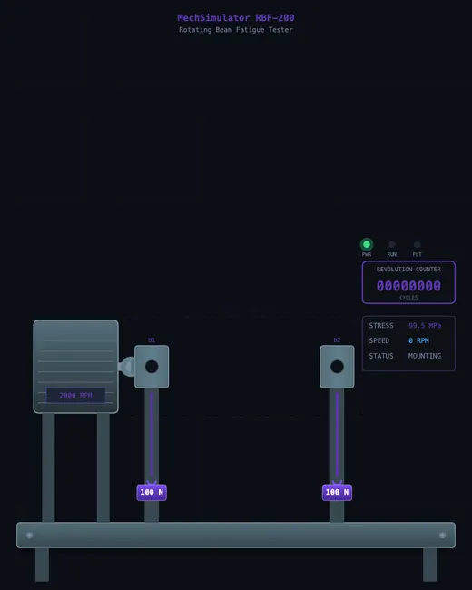
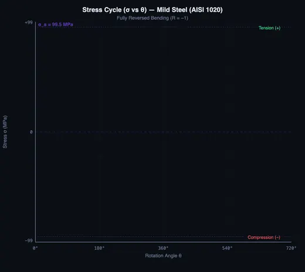
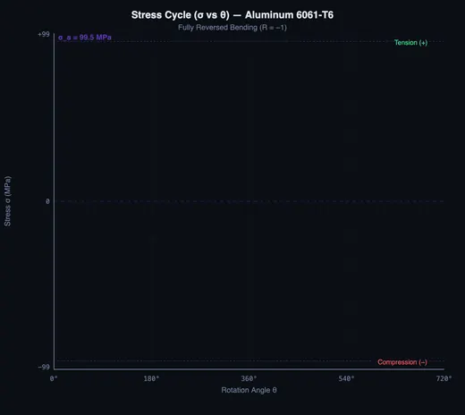

Fatigue Testing Virtual Lab
3D Model — Fatigue Testing Virtual Lab
Interactive fatigue testing lab — R.R. Moore rotating beam with S-N curve builder, Basquin’s equation, endurance limit, and crack growth. Try it free!
R.R. Moore Rotating Beam Fatigue Tester — S-N Curve Builder with 7 Materials
| # | Question | Result |
|---|
1 Overview
The Fatigue Testing Virtual Lab simulates an R.R. Moore rotating beam fatigue testing machine. Fatigue failure occurs when materials are subjected to repeated cyclic loading below their ultimate tensile strength. Over thousands or millions of stress cycles, microscopic cracks initiate at the surface, propagate through the cross-section with characteristic beach marks, and eventually cause sudden fracture. This simulator lets you run complete fatigue tests on seven engineering materials, building S-N curves (stress vs. number of cycles) in real time.
The R.R. Moore test subjects a rotating cylindrical specimen to pure bending. As the specimen rotates, every point on its surface alternates between tension and compression. By running tests at different stress amplitudes, you construct the material's S-N curve and identify the endurance limit (for ferrous metals) or the fatigue strength at a specified number of cycles (for non-ferrous metals).
2 Setting Up the Load Case
The simulator opens in Simulate mode with the R.R. Moore machine on the left canvas and the stress-cycle/S-N curve graph on the right. Below the canvases, the control panel provides material selection, specimen diameter slider, applied load slider, and motor speed (RPM) control. Lab procedure steps at the top guide you through the testing sequence.
To run your first test: (1) Select a material from the tabs. (2) Set the specimen diameter (typically 6-12 mm). (3) Adjust the applied load to set the desired stress amplitude. (4) Click "Mount Specimen" to load the specimen into the machine. (5) Click "Start Motor" to begin rotation. The machine animates the specimen spinning under bending load, and the S-N curve plots the current test point. When the specimen fractures (or reaches the run-out cycle count), results appear in the readout grid.
3 Building the Diagrams
The left canvas shows the rotating beam machine with animated specimen rotation, bending deflection, and crack growth visualization. Watch for crack initiation at the surface, progressive propagation with visible beach marks, and final fast fracture. The machine stops automatically when failure occurs. Graph badges display the current stress amplitude, cycle count, RPM, and predicted fatigue life.
The right canvas builds the S-N curve on a log-log scale. Each completed test adds a data point. For ferrous materials like steel, the curve flattens at the endurance limit, typically around 10^6 to 10^7 cycles. For aluminum and copper, the curve continues to decline without a clear plateau. The results grid shows stress amplitude, cycles to failure, endurance limit, UTS, fatigue life ratio, fracture type, safety factor, and failure mode classification. Run multiple tests at different stress levels to build a complete S-N curve.
Custom materials: Click “+ Custom” in the material tabs to define your own material with UTS, endurance limit, and Basquin constants. The modal adjusts units when Imperial mode is active.
Direct input: Click any slider value label (Diameter, Load, Speed) to type a precise number directly instead of dragging the slider.
4 Reading the Theory
Explore mode presents fatigue concepts organized into categories covering S-N curve theory, Basquin's equation, endurance limit factors, crack growth stages, fracture surface features, and the R.R. Moore test setup. Select any concept card to read a detailed explanation with formulas, diagrams, and worked examples.
Key topics include Basquin's equation (sigma_a = A times N^b), the three stages of fatigue failure (initiation, propagation, final fracture), surface finish and size effects on endurance limit, the meaning of beach marks and ratchet marks on fracture surfaces, and how mean stress affects fatigue life through the Goodman or Soderberg diagrams. The canvas updates with annotated diagrams for each concept.
5 Try a Problem
Practice mode generates calculation problems related to fatigue testing. Typical problems ask you to calculate stress amplitude from load and specimen geometry, predict fatigue life using Basquin's equation, determine the endurance limit as a fraction of UTS, or compute a safety factor against fatigue failure. Enter your answer, check it, and view the step-by-step solution if needed.
Quiz mode runs five questions per session covering both theory and calculations. Topics include S-N curve interpretation, endurance limit identification, Basquin equation parameters, fracture surface features, and the differences between high-cycle and low-cycle fatigue. Review your results after each quiz and retake to improve your score.
6 SI / Imperial Units & Export
Unit Toggle: Click “SI” or “Imperial” in the top bar. All stress values switch between MPa and psi, dimensions between mm and inches, and forces between N and lbf. Graph axes, readout cards, and machine labels all update instantly.
Export CSV: Click the CSV button below the graph to download the S-N curve data as a spreadsheet-ready file. The export uses whichever unit system is active.
Export PNG: Click the PNG button to save the current graph as an image file.
Right-click Menu: Right-click on the graph canvas for quick access to Save PNG, Export CSV, or Reset Test.
Sound Feedback: Audio cues confirm key events — a click sound on button presses, a mounting tone when the specimen is loaded, a crack sound at fracture, and distinct tones for correct/incorrect answers in Practice and Quiz modes. Sound is generated procedurally and requires no external files.
7 Tips & Best Practices
- Start with mild steel at a stress amplitude well above the endurance limit to see a quick failure, then gradually reduce the stress to approach the endurance limit.
- Run at least 5-6 tests at different stress levels to build a meaningful S-N curve with both the steep decline region and the flat endurance region.
- Compare ferrous materials (steel, cast iron) with non-ferrous materials (aluminum, copper) to observe the presence or absence of a distinct endurance limit.
- Pay attention to the fatigue life ratio: it tells you what fraction of the expected life the specimen survived at the given stress level.
- In Practice mode, remember that endurance limit for steel is approximately 0.5 times UTS (up to about 1400 MPa UTS).
- The specimen diameter affects the stress amplitude at a given load. Use the formula sigma = 32M / (pi d^3) where M is the bending moment from the applied load.
- Use Explore mode to review Basquin's equation before attempting Practice problems that require fatigue life prediction.
What is Fatigue Testing?

Fatigue testing determines how materials behave under repeated cyclic loading. Unlike static tensile or compression tests, fatigue testing subjects specimens to thousands or millions of stress cycles to find the point at which cracks initiate and eventually cause failure. The R.R. Moore rotating beam fatigue test is the most widely used method for generating S-N (stress vs. number of cycles) curves for engineering materials.
In this virtual lab, you operate a fully interactive R.R. Moore rotating beam fatigue testing machine. Select from 7 engineering materials, adjust specimen diameter and applied load, then watch the specimen rotate under pure bending stress. The simulator visualizes crack initiation, propagation with characteristic beach marks, and final fracture — all while building the material's S-N curve in real time.
A fact that always lands in class: steel has an endurance limit, aluminium doesn't. That's why aircraft skins (aluminium) get inspected on a calendar — every cycle counts, no matter how small. Steel bridges (with stress amplitudes safely below the knee) can run for centuries on the same girders. Same idea of fatigue, totally different design philosophy, decided by where the S-N curve flattens out (or doesn't).

The S-N Curve and Basquin's Equation
The S-N curve (also called the Wöhler curve) plots stress amplitude against the number of cycles to failure on a log-log scale. For ferrous metals like steel and cast iron, the curve flattens at the endurance limit — a stress level below which the material can theoretically survive infinite cycles. Non-ferrous metals like aluminum and copper show no distinct endurance limit and continue to weaken with increasing cycles. Basquin's equation (σa = A·Nb) mathematically describes this relationship.

Crack Growth and Fracture Surface
Fatigue fracture surfaces show distinctive features: beach marks (concentric rings from crack propagation), ratchet marks at the crack origin, and a rough fast-fracture zone where final failure occurred. This simulator visualizes all three stages — crack initiation from surface slip bands, stable crack propagation with visible beach marks, and sudden final fracture — helping students understand fatigue failure mechanisms.
Who Uses This Simulator?
This fatigue testing virtual lab is designed for mechanical engineering students, materials science researchers, quality control engineers, and technical instructors. It provides hands-on experience with fatigue testing concepts without requiring access to expensive laboratory equipment, making it ideal for remote learning and exam preparation.
Explore Related Simulators
If you found this Fatigue Testing simulator helpful, explore our Impact Testing simulator, Stress–Strain Curve simulator, Universal Testing Machine simulator, and Hardness Testing simulator for more hands-on practice.